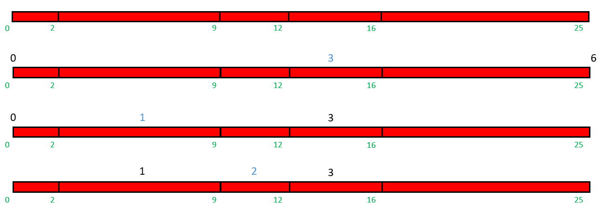

Worms
It is lunch time for Mole. His friend, Marmot, prepared him a nice game for lunch.
Marmot brought Mole n ordered piles of worms such that i-th pile contains ai worms. He labeled all these worms with consecutive integers: worms in first pile are labeled with numbers 1 to a1, worms in second pile are labeled with numbers a1 + 1 to a1 + a2 and so on. See the example for a better understanding.
Mole can’t eat all the worms (Marmot brought a lot) and, as we all know, Mole is blind, so Marmot tells him the labels of the best juicy worms. Marmot will only give Mole a worm if Mole says correctly in which pile this worm is contained.
Poor Mole asks for your help. For all juicy worms said by Marmot, tell Mole the correct answers.
Input:
The first line contains a single integer n (1 ≤ n ≤ 105), the number of piles.
The second line contains n integers a1, a2, …, an (1 ≤ ai ≤ 103, a1 + a2 + … + an ≤ 106), where ai is the number of worms in the i-th pile.
The third line contains single integer m (1 ≤ m ≤ 105), the number of juicy worms said by Marmot.
The fourth line contains m integers q1, q2, …, qm (1 ≤ qi ≤ a1 + a2 + … + an), the labels of the juicy worms.
Output:
Print m lines to the standard output. The i-th line should contain an integer, representing the number of the pile where the worm labeled with the number qi is.
範例:
input:
1 | 5 |
output:
1 | 1 |
Note:
For the sample input:
● The worms with labels from [1, 2] are in the first pile.
● The worms with labels from [3, 9] are in the second pile.
● The worms with labels from [10, 12] are in the third pile.
● The worms with labels from [13, 16] are in the fourth pile.
● The worms with labels from [17, 25] are in the fifth pile.
題意:
有隻鼴鼠正準備吃午餐，有另一隻鼴鼠幫他將N隻蟲，照編號頭尾相連的排成了一列，座標從第一隻蟲的最左邊為1開始延續，然後跟他講M次他該吃座標多少的蟲。現在問你他每一次吃的蟲是編號幾號的蟲？
思路:
建一個陣列，將蟲的長度累加，陣列中的第i格存的是編號i的蟲的尾巴座標是多少。接著將每次輸入的座標用二分搜尋法查找蟲的編號。
